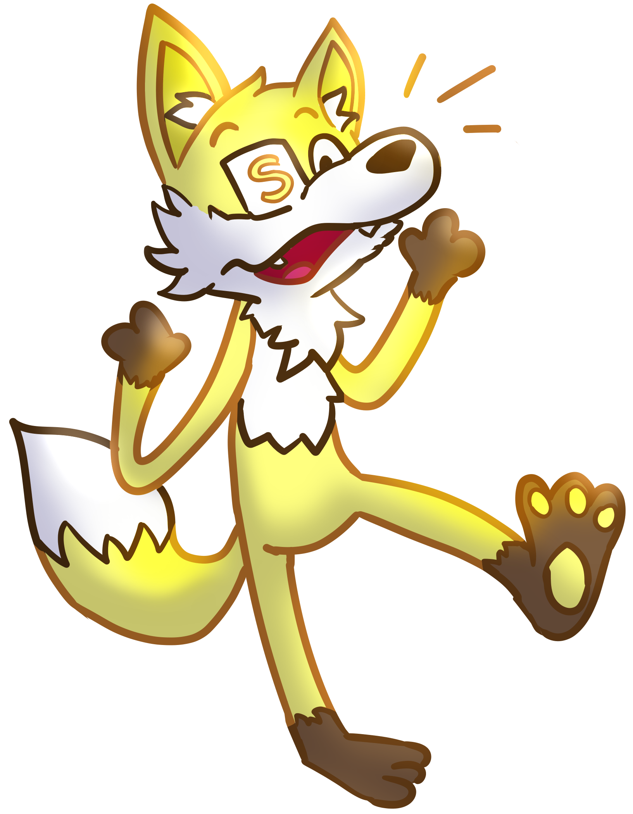
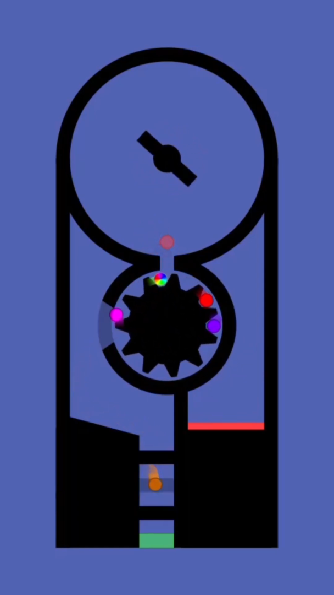
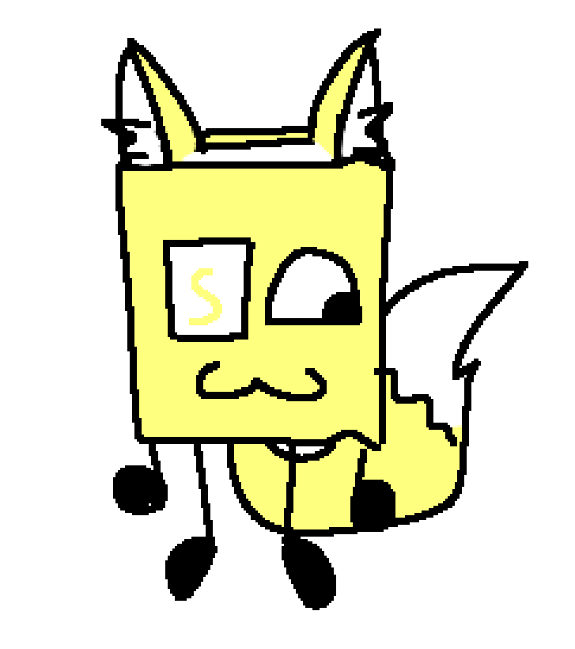

Foxrish.io
Salutations, visitor! The name's Sebastian, although most people know me as Foxrish! This is a personal website where I showcase my artistic creations, my online gameshow FoxrishTWOW, and links to my social medias. You'll probably learn a little bit about me (not too much though, stranger danger and such!)
Why Foxes?

Foxes have been my favorite animals for many years, and have become a huge part of my identity and artistic expression. Foxes, in my eyes, are kind of bipolar - they can be playful and adorable, but at the same time, they are also vicious hunters who are aggressive torwards their prey. I find this contrast to be interesting, and in a way reflects me and my bipolar disorder. On top of that, foxes are interesting creatures in general. The fox character to the left is a drawing of my character, Sebastian Foxington (very creative name, I know), drew by Meptune! With that in mind, I wouldn't consider myself a furry. I have no hatred towards the community, but I just don't really identify with that group. I just like foxes!
My Video Making Endeavors

On Christmas Day, 2019, I was given my very own laptop; it was a Windows 10 laptop, and I was very excited! A couple days later, I uploaded the first video on my YouTube channel, The Amazing Marble Race Season 1 Part 1, using a physics engine called Algodoo. Marble races are a type of video where coloured marbles race through a track. An example of a marble race can be seen in the image on the left. I would end up uploading hundreds of videos in the span of a few years, and eventually reached 1,000 subscribers near the end of 2023! Unfortunately, by the start of 2024, I had lost interest in marble racing, and have hardly uploaded anything since. I am glad I got into marble racing at a young age, though. Marble races showed my creative side, and I had many fond memories of creating those videos (and if we're being frank, these marble races are a lot more wholesome than the brainrot our children are watching nowadays).
Words of Wisdom

I had the pleasure to join an online competetion called Eleven Words of Wisdom, hosted by carykh (who some of you might recognize as one of the creators of BFDI). In EWOW, contestants are given a prompt, and have to respond to it in 11 words or less. Each contestant is represented by a booksona, with mine being shown to the left. I ended up just barely missing out on survival in round 16, and died at 126th place overall. While my elimination did upset me at first, in hindsight, placing in the top 130 in a competetion with over 16,000 initial contestants is insane, specially considering the fact that I had never done anything like EWOW before! During my time in EWOW, I joined TWOW Central, a discord server dedicated to EWOW; and while I don't pay much attention to EWOW anymore, TWOW Central has remained an enjoyable communtiy for me, and it is where I have met some amazing people who I enjoy talking to this day!